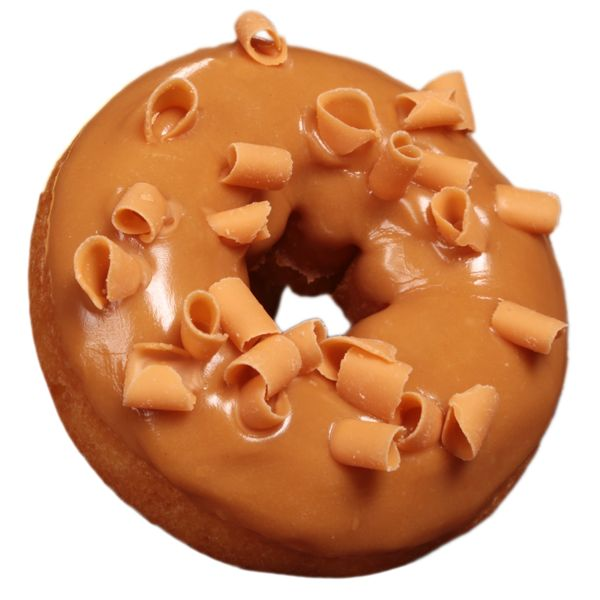

Nutella Filled Donut

Description :
I'm a sucker for donuts, and these Nutella®-filled donut muffins are baked instead of fried and super delicious!
Ingredients:
Donut Muffins:
- 1 ¾ cups all-purpose flour
- 1 ½ teaspoons baking powder
- ½ teaspoon salt
- ½ teaspoon ground cinnamon
- ¾ cup white sugar
- ¾ cup milk
- ⅓ cup vegetable oil
- 1 egg
- 1 teaspoon vanilla extract
- 1 (13 ounce) jar chocolate-hazelnut spread (such as Nutella®)
Cinnamon-Sugar Coating:
- 3 tablespoons unsalted butter, or more as needed
- ⅓ cup white sugar
- 1 teaspoon ground cinnamon
Powdered Sugar Glaze:
- 1 ½ cups sifted powdered sugar, or more as needed
- ¼ cup milk
- 2 teaspoons vanilla extract
Directions:
- Step-1:
Preheat the oven to 350 degrees F (175 degrees C). Grease a 12-cup muffin tin.
- Step-2:
Combine flour, baking powder, salt, and cinnamon in a medium bowl. Whisk until combined.
- Step-3:
Combine 3/4 cup sugar, milk, vegetable oil, egg, and vanilla extract in a large bowl. Add flour mixture and stir until combined.
- Step-4
Place 2 tablespoons of batter into each prepared muffin cup. Add 1 to 2 teaspoons of Nutella® to the center of each and cover
with 2 additional tablespoons donut batter, or until each cup is 3/4 full.
- Step-5
Bake in the preheated oven until edges and bottoms are browned, 18 to 22 minutes. Do not overbake. Remove from the oven and
let sit for 5 minutes; shake muffins out of the tin while still warm.
- Step-6
Melt butter in a small microwave-safe bowl in a microwave in 10 second intervals. Combine sugar and cinnamon in another small
bowl. Dip donut muffins into the melted butter followed by cinnamon-sugar coating.
- Step-7
Mix powdered sugar, milk, and vanilla extract together in a bowl. Dip donut muffins into glaze.